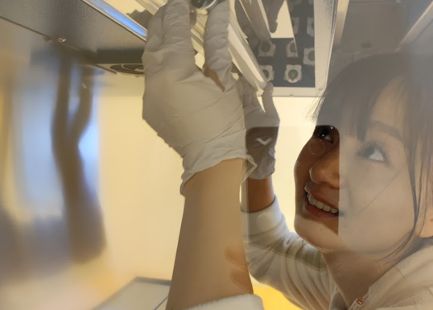

News & Updates
Stay updated with the latest from Capo Lab.

March 2024
Baraa joins as a post-doc Kempe fellow
Baraa Rehamnia works on the survival of prokaryotes in lake sediments by reconstructing genomes from sediment metagenomes.
Read more →

February 2024
Giota joins as visiting PhD student
Panagiota Xanthopoulou, PhD student at the University of the Aegean (Greece) came to be trained with environmental genomic data analysis for marine biodiversity assessments and invasive species managements in past and modern environments.

December 2023
Sedimentary DNA Book Published
Eric Capo co-edited "Tracking Environmental Change Using Lake Sediments: Volume 6 - Sedimentary DNA" published by Springer.

December 2023
Meifang starts as PhD student
Meifang Zhong join the Capo lab as PhD student to study microbial metabolisms in deoxygenated coastal systems
Read more →

October 2023
Environmental DNA lab!
Capo lab is establishing a environmental DNA lab at EMG Dpt.

November 2023
VR Grant Awarded
Eric secured a VR Starting grant “Gasping for Breath: Exploring the consequences of coastal deoxygenation on microbial processes and ecosystem services“.
Read more →

May 2023
The beginning
Eric joins the Department of Ecology and Environmental Sciences at Umeå University as Assistant Professor